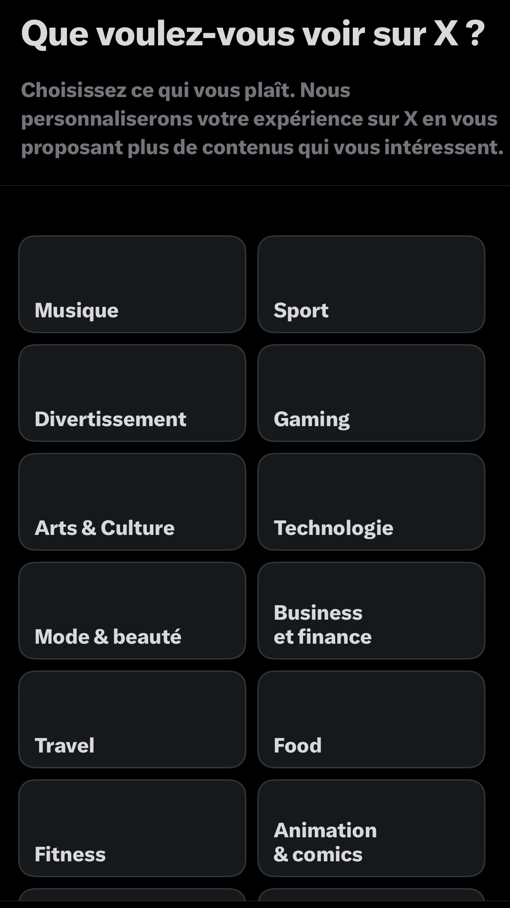
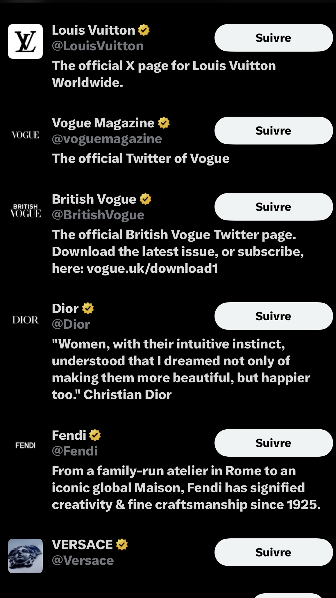
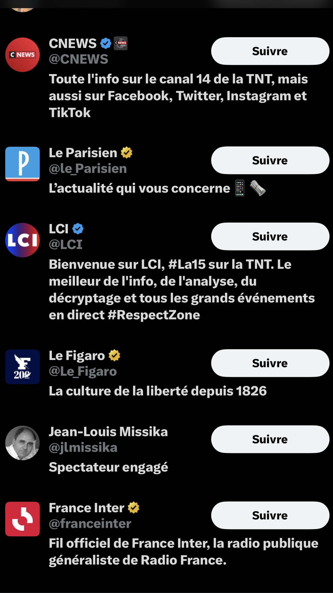
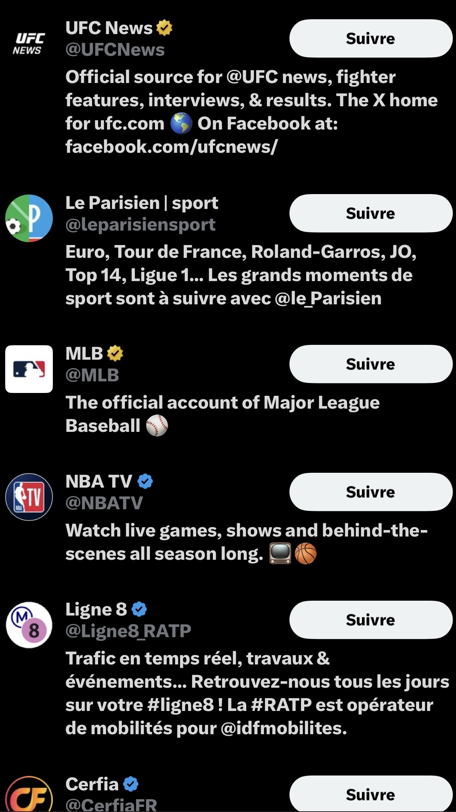
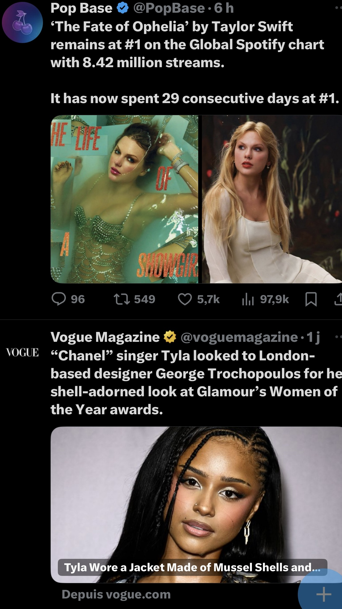
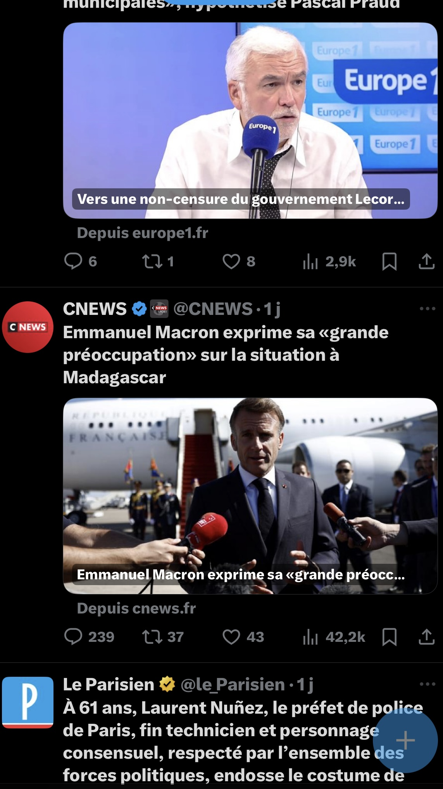
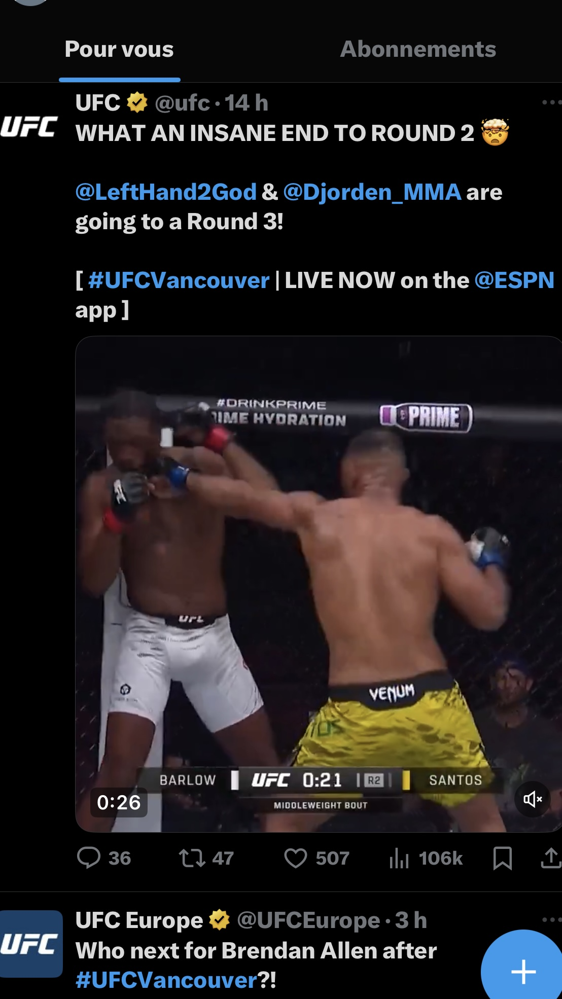

Comprendre comment les usages transforment les fils d’actualité
1 Interactions et spécialisation des fils d’actualité
Notre expérimentation a clairement montré à quel point les plateformes réagissent aux comportements des utilisateurs pour renforcer leurs préférences initiales. En effet, au départ les fils d’actualité des comptes créés étaient assez variés. Mais au bout de quelques jours d’interactions ciblées, les changements sont devenus très visibles.
1.1 Tiktok
Pour commencer, même si cela n’est pas une obligation imposée par la plateforme, un choix de centres d’intérêt nous est proposé dès le début. Nous avons donc utilisé cette option et avons créé trois comptes sur cette plateforme avec des centres d’intérêt différents:
- un compte axé politique et en partie militant (de gauche)
- un compte axé sport et en partie militant (de gauche), surtout autour du football
- un compte axé divertissement et en partie militant (de gauche), orienté vers le contenu audiovisuel et créatif (créateurs YouTube, Twitch…)
L’arrivée sur la plateforme est donc assez fluide et présente peu d’obstacle décisionnels comme nous le verrons plus tard pour Twitter car l’utilisateur fait ses premiers pas comme il lui semble, ce qui n’empêche pas une homogénéisation assez rapide (dès le second jour même) et qui, comme nous allons le voir, se stabilise.
Pour comprendre les tendances et la récurrence des contenus dans chaque profil-type sur TikTok, nous avons adopté une approche quantitative. Concrètement, pour chacun des trois profils, nous avons sélectionné trois hashtags représentatifs (les premiers qui sont apparus sur le fil) puis observé leur évolution. Après environ dix jours de “construction” du profil (likes, abonnements, partages ciblés), nous avons ensuite parcouru chaque fil d’actualité à raison de 50 vidéos par jour, en notant la fréquence d’apparition de chaque hashtag. Les résultats obtenus se sont révélés très parlants, mettant en évidence des dynamiques claires de spécialisation du contenu.
Évolution des contenus sur 20 jours
Lecture rapide: Les trois profils convergent vers une homogénéité du fil. Le sport est dominé par #foot, le politique par l’institutionnel et le divertissement par les créateurs vidéo (Twitch/YouTube).
Données plus détaillées (évolution sur 20 jours)
Évolution des contenus TikTok : début / milieu / fin de période
Les hashtags #politique et #gouvernement dominent tout au long de la période. On peut en conclure que l’algorithme renforce un fil homogène centré sur l’actualité
#foot reste très dominant (il apparait même sur des vidéos de musculation ou motivation).
Les hashtags #youtube et #twitch augmentent. Le fil reste stable et audiovisuel ce qui confirme bien la spécialisation algorithmique.
Comment lire les tableaux: Les pourcentages indiquent des taux de présence , donc une même vidéo peut comporter plusieurs hashtags.
Visualisation des évolutions
Divertissement
Évolution des hashtags sur 20 jours

Sur TikTok, le fil d’actualité “divertissement” se spécialise vite et reste ensuite relativement stable. L’algorithme a compris le type de contenu attendu (#youtube et #twitch) dès les premiers jours et maintient cette homogénéité dans le temps.
Politique Évolution des hashtags sur 20 jours
{kind=link}
Sur le compte “politique”, le contenu dominant reste institutionnel et généraliste (#gouvernement, #politique), tandis que les contenus plus militants (#lfi) apparaissent seulement par moments.
Sport Évolution des hashtags sur 20 jours
{kind=link}
Le fil d’actualité “sport” s’est construit autour d’un seul registre dominant qui est le foot. Même si d’autres hashtags apparaissent, ils restent marginaux.
Tous ces chiffres nous montrent une chose simple. En effet, les plateformes suivent les goûts dont nous lui faisons part et cherche à répondre à notre attention et satisfaction. Cela pousse l’individu à être assigné à un groupe d’affinités.
1.2 X (Twitter)
Si TikTok montre une homogénéisation progressive fondée sur l’observation des interactions, Twitter semble structurer cette homogénéité avant même que l’utilisateur n’agisse. En effet, avant même la création du compte, la plateforme impose une première étape de paramétrage car il faut sélectionner une série de thèmes d’intérêt. Nous avons donc utilisé cette option pour spécialiser nos comptes:

Étape 1: Choix des domaines d’intérêt proposés lors de la création du compte Twitter
De fait, devoir choisir agit comme un filtrage initial car l’utilisateur n’accède pas à un espace neutre mais à un environnement déjà organisé selon les catégories que la plateforme lui propose. À partir de ces sélections, Twitter génère immédiatement une liste de comptes “recommandés” associés aux thèmes choisis:
  
Étape 2: Comptes recommandés selon les trois profils Twitter (divertisement, politique et sport)
Par exemple, pour le profil orienté “politique” les suggestions renvoient massivement à des figures publiques, des journalistes et des médias engagés. Pour le profil “sport”, il reçoit des comptes liés à l’actualité sportive et le profil “divertissement” voit apparaître des comptes liés à l’industrie de la mode. Ced recommendations montrent que l’algorithme de Twitter ne se contente pas de répondre à des usage mais anticipe les préférences et préstructure le fil d’actualité avant même toute interaction.
L’expérience menée avec trois comptes distincts confirme cette logique de spécialisation immédiate. Dès les premières minutes d’utilisation, les fils d’actualité se sont révélés radicalement différents sans qu’aucune action particulière (like, abonnement, recherche) n’ait été effectuée:
  
Étape 3: Fils d’actualité spécialisés après 3 semaines selon les trois profils Twitter (divertisement, politique et sport)
-Le compte divertissement mélange des contenus de pop culture et de tendances (musique, mode, humour…).
-Le compte politique affiche majoritairement des tweets d’opinion, des tweets sur l’actualité et des débats.
-Le compte sport est composé quasi exclusivement de publications liées aux compétitions, aux clubs et aux commentaires sportifs.
Les captures d’écran montrent donc une différenciation immédiate entre les trois fils d’actualité carchacun forme un univers thématique bien délimité avec son vocabulaire et sees références. D’une part, sur Twitter, l’homogénéité ne se construit pas peu à peu comme sur TikTok mais elle est préétablie dès la création du compte. L’utilisateur n’entre pas dans un espace neutre car il est placé d’emblée dans une catégorie que la plateforme a anticipée à partir de ses choix initiaux. Twitter devine ce que l’utilisateur veut voir et le lui montre immédiatement. D’autre part, cette spécialisation s’accentue car les mêmes sourcesc et les mêmes formats réapparaissent ce qui donne l’impression d’une diversité qui reste en réalité très limitée.
2 Analyse des entretiens
Pour accompagner cette analyse, nos quatre entretiens réalisés auprès d’individus âgés de 19 à 34 ans ont permis d’observer des régularités dans les usages.
2.1 Des usages peu réfléchis
Tous les enquêtés décrivent une présence quotidienne (presque automatique) sur les réseaux. Les applications sont ouvertes sans but précis, souvent “quand [ils ont] cinq minutes” (Enquêtée 2), dans une logique d’habitude plus que de recherche. L’étudiant en ingénierie parle d’un “scroll sans trop réfléchir” (Enquêté 1), tandis que l’auditeur évoque des moments où “je me dis “juste cinq minutes” et j’y suis encore une heure après” (Enquêté 4). Ces pratiques traduisent une consommation passive car les utilisateurs ne vont pas vers l’information mais elle vient à eux.Les contenus sont découverts par les recommandations, les “pour toi” ou les partages d’amis, rarement par recherche directe. Même les usagers qui disent “s’informer”, notamment l’étudiante de 19 ans, le font dans un cadre divertissant, Instagram et Twitter servent à se divertir: “voir l’actualité quand même. Mais les mêmes sur X sont super drôles” (Enquêtée 2).
2.2 La conscience du tri algorithmique sans remise en question
Tous reconnaissent le caractère répétitif de leur fil mais pourtant peu le perçoivent négativement: “Euh non ça me dérange pas plus que ça, fin généralement au contraire je pense que si j’avais des trucs que j’aimais pas j’aurais arrêté d’utiliser” (Enquêtée 2), “Je préfère quand c’est drôle, j’ai assez de boulot pour les débats” (Enquêté 1). Cette tolérance d’homogénéité illustre bien que la répétition algorithmique n’est pas seulement subie mais recherchée. L’avocat, plus critique, admet lui aussi “un effet d’entre-soi” sur Instagram, mais parle d’un “confort intellectuel” qu’il assume (Enquêté 2).
2.4 Des différences générationnelles et d’attitude face aux contenus
L’analyse comparée des profils montre que les plus jeunes utilisent les réseaux de manière ludique tandis que les plus âgés (l’avocat notamment) mobilisent les plateformes pour articuler engagement et expression personnelle. Les étudiants expriment une volonté d’évasion: “je veux juste me détendre pas me battre” (Enquêtée 1). L’avocat, au contraire, revendique un usage réflexif car “je m’abonne aussi à quelques comptes opposés pour voir comment ils pensent” (Enquêté 2) même s’il reconnaît que son fil reste ” très très politique et même très à gauche”. Cette tension illustre la diversité des rapports à la réflexivité numérique car la plupart se contentent de filtrer ce qui dérange tandis que certains cherchent activement à comprendre le fonctionnement du flux.
2.5 De la personnalisation à la communauté
En plus de tout ce qui a été déjà abordé, les entretiens montrent à quel point les réseaux deviennent le prolongement de sociabilités déjà existantes. L’ingénieur évoque “les communautés de jeux” sur Discord (Enquêté 1), l’avocat parle d’un “écosystème militant autour des droits humains”(Enquêté 2) et l’étudiante explique en parlant de son grouoe d’amis: « on like les mêmes trucs » (Enquêtée 2). Ces espaces d’appartenance semblent donc bien fondés sur la reconnaissance et la ressemblance et forment des environnements où la cohérence prime sur la contradiction. Le fil d’actualité agit alors comme un miroir collectif car il renvoie à l’utilisateur une version de lui-même et de son groupe.
Conclusion générale de la partie
En somme, les résultats combinés des expérimentations sur les applications et des entretiens montrent que les logiques d’homogénéisation sont co-produites puisque les algorithmes amplifient des préférences sociales déjà ancrées tandis que les utilisateurs renforcent eux-mêmes ces dynamiques. Ainsi, les réseaux deviennent des espaces de continuité sociale plus que de découverte car ce sont des lieux où l’on se retrouve davantage qu’on ne se confronte.